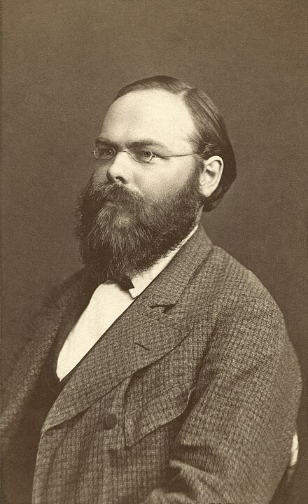

這份筆記是關於向量空間上內積的定義與性質。
內積空間
定義 1：內積 (Inner Product)
給定\(F\)上向量空間\(V\)。其中\(F=\mathbb{C}\)或\(\mathbb{R}\)。考慮函數\(\langle\cdot,\cdot\rangle:V\times V\to
F\)。若\(\langle\cdot,\cdot\rangle\)滿足以下四個條件，則稱\(\langle\cdot,\cdot\rangle\)為\(V\)上的內積：
1. 對於所有\(x,y,z\in V\)，有\(\langle x+z,y\rangle=\langle x,y\rangle+\langle
z,y\rangle\)。
2. 對於所有\(x,y\in
V\)，\(c\in F\)，有\(\langle cx,y\rangle=c\langle x,y\rangle\)。
3. 對於所有\(x,y\in V\)，有\(\overline{\langle x,y\rangle}=\langle
y,x\rangle\)。(這裡的\(\overline{\langle
x,y\rangle}\)是指共軛複數)。
4. 對於\(0\neq x\in V\)，有\(\langle x,x\rangle>0\)。
性質 1-1
若\(F=\mathbb{R}\)，則\(\forall x,y\in V\)，\(\langle x,y\rangle=\langle y,x\rangle\)(這來自定義1的第3.點)。
性質 1-2
若\(F=\mathbb{C}\)，則\(\forall x,y\in V\), \(c\in F\)，有\(\langle x,cy\rangle=\overline{c}\langle
x,y\rangle\)。
證明：由定義1的第3.點，有 \[ \overline{\langle x,cy\rangle}=\langle cy,x\rangle=c\langle y,x\rangle \] 故 \[ \langle x,cy\rangle=\overline{\left(\overline{\langle x,cy\rangle}\right)}=\overline{c\langle y,x\rangle}=\overline{c}\overline{\langle y,x\rangle}=\overline{c}\langle x,y\rangle \] QED
性質 1-3
對於\(x\in V\)，有\(\langle 0,x\rangle=0\)。
證明：有 \[ \langle 0,x\rangle=\langle 0\cdot x,x\rangle=0\cdot\langle x,x\rangle=0 \] QED
性質 1-3-1
對於\(x\in V\)，有\(\langle 0,x\rangle=0=\langle x,0\rangle\)。
性質 1-4
對於\(v_1,v_2,\cdots,v_n,y\in V\), \(a_1,a_2,\cdots,a_n\in F\)，有 \[ \left\langle\sum_{i=1}^n a_iv_i,y\right\rangle=\sum_{i=1}^n a_i\langle v_i,y\rangle \] 即內積函數是線性的。
性質 1-5
若\(\langle\cdot,\cdot\rangle\)是\(V\)上的內積函數，則對於實數\(r>0\)，\(r\langle\cdot,\cdot\rangle\)也是\(V\)上的內積函數。
性質 1-6
對於\(x,y,z\in V\)，有 \[ \langle x,y+z\rangle=\overline{\langle y+z,x\rangle}=\overline{\langle y,x\rangle}+\overline{\langle z,x\rangle}=\langle x,y\rangle+\langle x,z\rangle \]
性質 1-7
給定\(y,z\in V\)。若對於所有\(x\in V\)有\(\langle x,y\rangle=\langle
x,z\rangle\)，則\(y=z\)。
證明：即對於所有\(x\in V\)有\(\langle x,y-z\rangle=0\)。但\(y-z\in V\)，且由定義1的第4.點知 \[ \langle y-z,y-z\rangle\geq 0 \] 且\(y-z\neq 0\)時上述內積大於零。故令\(x=y-z\)可知應有\(y-z=0\) i.e. \(y=z\)。QED
定義 2：伴隨 (Adjoint)
給定\(A\in M_{m\times n}(F)\)。若矩陣\(A^\ast\)滿足 \[ (A^\ast)_{ij}=\overline{A_ji} \] 則稱\(A^\ast\)是\(A\)的伴隨，或稱\(A^\ast\)是\(A\)的共軛轉置(Conjugate Transpose)。
例 2-1：佛羅畢尼烏斯內積 (Frobenius Inner Product)
令\(V=M_{n\times n}(F)\)。令 \[ \langle A,B\rangle=\mbox{tr}(AB^\ast)=\mbox{tr}(B^\ast A) \] 可以驗證這是一個\(V\)上的內積函數(詳略)，我們稱此為佛羅畢尼烏斯內積。
定義 3：內積空間 (Inner Product Space)
給定\(F\)上向量空間\(V\)。若\(V\)上有定義內積\(\langle\cdot,\cdot\rangle\)，則稱\((V,\langle\cdot,\cdot\rangle)\)為一內積空間。
定義 4：範數 (Norm)
令\(V\)為內積空間，對於\(x\in V\)，我們將\(x\)的範數定義為 \[ \|x\|=\sqrt{\langle x,x\rangle} \]
性質 4-1
給定\(F\)上的內積空間\(V\)，則我們有以下性質：
1. 對於\(c\in F,x\in V\)，有\(\|cx\|=|c|\cdot\|x\|\)。
2. \(\|x\|=0\)若且唯若\(x=0\)。
(這都是顯然的，證略。)
定理 5：柯西-施瓦茨不等式(Cauchy-Schwarz Inequality)
給定\(F\)上的內積空間\(V\)，則對於\(x,y\in V\)，有\(|\langle
x,y\rangle|\leq\|x\|\|y\|\)，且等號成立若且唯若存在\(c\in F\)使得\(x=cy\)。
證明：若\(y=0\)，則定理顯然成立。我們這裡假設\(y\neq 0\)。則對於\(c\in F\)，有 \[ \begin{aligned} 0&\leq\|x-cy\|^2\mbox{ (☆)}\\ &=\langle x-cy,x-cy\rangle\\ &=\|x\|^2-c\langle y,x\rangle-\overline{c}\langle x,y\rangle+c\overline{c}\|y\|^2 \end{aligned} \] 而令\(c=\frac{\langle x,y\rangle}{\langle y,y\rangle}\)，即會有 \[ \begin{aligned} 0&\leq \|x\|^2-\frac{\langle x,y\rangle}{\langle y,y\rangle}\langle y,x\rangle-\frac{\langle y,x\rangle}{\langle y,y\rangle}\langle x,y\rangle+\frac{\langle x,y\rangle}{\langle y,y\rangle}\frac{\langle y,x\rangle}{\langle y,y\rangle}\|y\|^2\\ &=\|x\|^2-\frac{|\langle x,y\rangle|^2}{\|y\|^2} \end{aligned} \] 故有 \[ |\langle x,y\rangle|^2\leq\|x\|^2\|y\|^2 \] 即\(|\langle x,y\rangle|\leq\|x\|\|y\|\)。而等號成立需要(☆)處是等號，即要存在\(c\in F\)使得\(x=cy\)。QED
定理 6：三角不等式 (Triangular Inequality)
給定\(F\)上的內積空間\(V\)，則對於\(x,y\in V\)，有\(\|x+y\|\leq\|x\|+\|y\|\)，且等號成立若且唯若存在\(c\in\mathbb{R}_{\geq 0}\)使得\(x=cy\)。
證明：我們有 \[ \begin{aligned} \|x+y\|^2&=\langle x+y,x+y\rangle\\ &=\langle x,x\rangle+\langle x,y\rangle+\langle y,x\rangle+\langle y,y\rangle\\ &=\|x\|^2+2\mbox{Re}(\langle x,y\rangle)+\|y\|^2\\ &\mbox{(這裡Re指的是數的實部)}\\ &\leq \|x\|^2+2|\langle x,y\rangle|+\|y\|^2\\ &\leq (\|x\|+\|y\|)^2\mbox{ (★)} \end{aligned} \] (★)來自定理5的柯西-施瓦茨不等式。故有\(\|x+y\|\leq\|x\|+\|y\|\)。而等號成立條件是\(\mbox{Re}(\langle x,y\rangle)=|\langle x,y\rangle|\)且(★)處也要是等號，故由定理5知要有\(x=cy\), \(c\in\mathbb{R}_{\geq 0}\)。QED
註記 7
我們可以發現這裡定義的範數與這裡的定義1的範數定義相容。事實上，該處的定義是比較廣泛的定義。當\(V\)不是內積空間時，我們可以用該處的方式定義範數。
格蘭-施密特正交化過程
定義 8：正交 (Orthogonal)
給定內積空間\(V\)，並給定其子集\(S\)。若對於所有\(x\neq y\in S\)有\(\langle x,y\rangle=0\)，則稱\(S\)是正交的。
定義 8-1：正交規範 (Orthonormal)
給定內積空間\(V\)，並給定其正交子集\(S\)。若對於所有\(x\in S\)有\(\|x\|^2=\langle x,x\rangle=1\)，則稱\(S\)是正交規範的。
定理 9
給定內積空間\(V\)，並令\(S=\{v_1,v_2,\cdots,v_k\}\)是\(V\)的正交子集。若\(y\in\mbox{span}(S)\)，則 \[ y=\sum_{i=1}^k\frac{\langle y,v_i\rangle}{\langle v_i,v_i\rangle}v_i \]
證明：由於\(y\in\mbox{span}(S)\)，故可令 \[ y=\sum_{i=1}^k a_iv_i \] 故有 \[ \begin{aligned} \langle y,v_i\rangle&=\left\langle\sum_{j=1}^k a_jv_j,v_i\right\rangle\\ &=\sum_{j=1}^k a_j\langle v_j,v_i\rangle\\ &=a_i\langle v_i,v_i\rangle \end{aligned} \] 最後一步是因為\(S\)是正交的。故有\(a_i=\frac{\langle y,v_i\rangle}{\langle v_i,v_i\rangle}\mbox{ (✪)}\)，即 \[ y=\sum_{i=1}^k\frac{\langle y,v_i\rangle}{\langle v_i,v_i\rangle}v_i \] QED
註記 9-1
在定理9中，若\(S\)是正交規範的，則對於\(y\in\mbox{span}(S)\)，有 \[ y=\sum_{i=1}^k\langle y,v_i\rangle v_i \]
註記 9-2
給定內積空間\(V\)，並令\(S=\{v_1,v_2,\cdots,v_k\}\)是\(V\)的正交子集。則\(S\)是線性獨立的。
證明：若存在\(a_1,a_2,\cdots,a_k\)使得 \[ y=\sum_{i=1}^k a_iv_i=0 \] 則由定理9中的(✪)知應有\(a_i=0\)，故\(S\)是線性獨立的。QED
定理 10：格蘭-施密特正交化過程 (Gram-Schmidt Orthogonalization Process)
給定內積空間\(V\)與其線性獨立子集\(S=\{w_1,w_2,\cdots,w_n\}\)。考慮集合\(S'=\{v_1,v_2,\cdots,v_n\}\)，其中 \[
\begin{aligned}
v_1&=w_1\\
v_2&=w_2-\frac{\langle w_2,v_1\rangle}{\|v_1\|^2}v_1\\
v_3&=w_3-\frac{\langle w_3,v_1\rangle}{\|v_1\|^2}v_1-\frac{\langle
w_3,v_2\rangle}{\|v_2\|^2}v_2\\
&\vdots\\
v_k&=w_k-\sum_{j=1}^{k-1}\frac{\langle
w_k,v_j\rangle}{\|v_j\|^2}v_j\\
&\vdots
\end{aligned}
\] 則\(S'\)是正交的，且\(\mbox{span}(S)=\mbox{span}(S')\)。
證明：我們對\(S\)中的元素數量\(n\)做數學歸納法。
1. \(n=1\)時，\(S=S'\)，結論是顯然的。
2.
假設當\(n=k-1\)時，\(S_{k-1}'=\{v_1,v_2,\cdots,v_{k-1}\}\)是正交的且\(\mbox{span}(S_{k-1}')=\mbox{span}(S_{k-1})\)，其中\(S_{k-1}=\{w_1,w_2,\cdots,w_{k-1}\}\)。則令\(S_k'=\{v_1,v_2,\cdots,v_{k-1},v_k\}\)，其中
\[
v_k=w_k-\sum_{j=1}^{k-1}\frac{\langle w_k,v_j\rangle}{\|v_j\|^2}v_j
\] 由於\(S_k=\{w_1,w_2,\cdots,w_k\}\)是線性獨立的，故應有\(v_k\neq 0\)。而對於\(j=1\sim k-1\)，由\(\{v_1,v_2,\cdots,v_{k-1}\}\)正交有 \[
\begin{aligned}
\langle v_k,v_j\rangle&=\left\langle
w_k-\sum_{l=1}^{k-1}\frac{\langle
w_k,v_l\rangle}{\|v_l\|^2}v_l,v_j\right\rangle\\
&=\langle w_k,v_j\rangle-\frac{\langle
w_k,v_j\rangle}{\|v_j\|^2}v_j\langle v_j,v_j\rangle=0
\end{aligned}
\] 故對於所有\(i\neq j, i,j=1\sim
k\)，有\(\langle
v_i,v_j\rangle=0\)，故知\(S_k'\)是正交的。
於是，由數學歸納法可知對於任何\(n\)，\(S'\)都是正交的。
對於定理的後半部分，由定義可知 \[
\mbox{span}(S')\subseteq\mbox{span}\{w_1,w_2,\cdots,w_n\}
\] 而由於\(S'\)是正交的，故由註記9-2知\(S'\)是線性獨立的，即 \[
\dim\mbox{span}(S')=n=\dim\mbox{span}(S)
\] 故有 \[
\mbox{span}(S')=\mbox{span}(S)
\] QED
定理 10-1
有限維的內積空間\(V\)總有正交規範的基底。
(把定理10中的\(v_k\)除以\(\|v_k\|\)就是正交規範的了。)
註記 10-2
給定有限維內積空間\(V\)，並令\(\beta=\{v_1,v_2,\cdots,v_n\}\)是\(V\)的正交規範基底。並給定線性映射\(T:V\to V\)，令\(A=[T]^\beta_\beta\)，則\(A_{ij}=\langle
T(v_j),v_i\rangle\)。
證明：由定義有 \[ T(v_j)=\sum_{k=1}^n A_{kj}v_k\mbox{ (★★)} \] 故有 \[ \langle T(v_j),v_i\rangle=\left\langle\sum_{k=1}^n A_{kj}v_k,v_i\right\rangle=A_{ij} \] QED
註記 10-2-1
沿用註記10-2的符號，由(★★)易得 \[ T(v_j)=\sum_{k=1}^n\langle T(v_j),v_k\rangle v_k \]